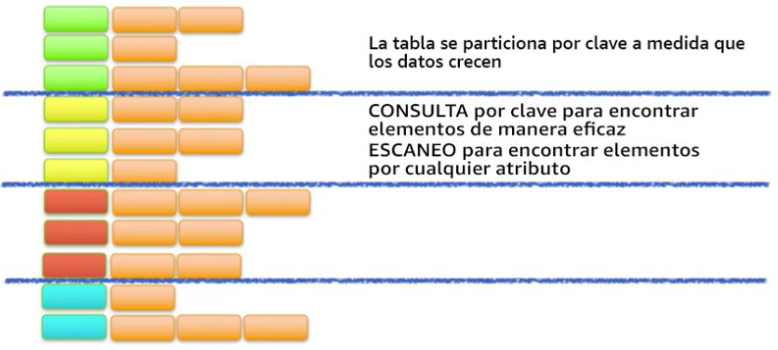
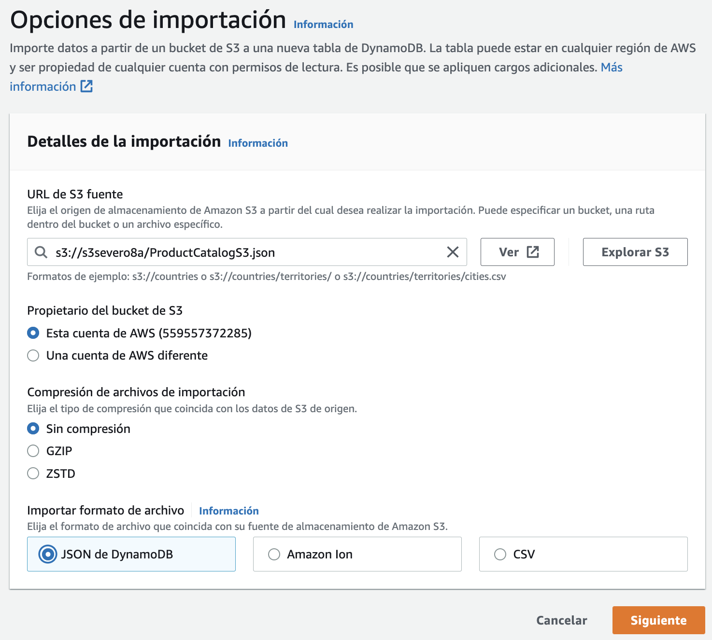

DynamoDB (https://aws.amazon.com/es/dynamodb/) es un servicio administrado de base de datos NoSQL clave-valor y documental, rápido y flexible para todas las aplicaciones que requieren una latencia uniforme de un solo dígito de milisegundos a cualquier escala y una capacidad de almacenamiento prácticamente ilimitado.
Así pues, es un almacén de claves/valor (similar a Redis y MongoDB a la vez), flexible y sin estructura fija (los elementos pueden tener atributos diferentes), diseñado para garantizar un determinado rendimiento y disponibilidad para cada tabla (en NoSQL suele haber pocas tablas), es decir, se definen elementos por tabla y se paga según lo exigido en cada una.
las tablas: son conjuntos de datos, formada por los elementos.
los elementos: grupo de atributos que pueden identificar de forma exclusiva a un registro.
los atributos: elementos de datos fundamental que no es preciso seguir dividiendo.
DynamoDB soporta dos tipos de claves principales:
La clave de partición es una clave principal simple.
La clave de partición y de ordenamiento, también conocidas como clave principal compuesta, ya que está formada por dos atributos.
Claves
A medida que aumenta el volumen de datos, la clave principal particiona e indexa los datos de la tabla. Podemos recuperar los datos de una tabla de DynamoDB de dos formas distintas, bien por la clave y hacer una consulta directa, o utilizar un escaneo de todos los elementos en busca de aquello que coincida con el parámetro de búsqueda.

Consultas por clave o escaneo
Para aprovechar al máximo las operaciones de consulta, es importante que la clave utilizada identifique de forma unívoca los elementos de la tabla de DynamoDB, ya que se crea automáticamente un índice desordenado sobre dicha clave. Podemos configurar una clave principal simple basada en un único atributo de los valores de los datos con una distribución uniforme. De forma alternativa, podemos especificar una clave compuesta, que incluye una clave de partición y una clave secundaria, lo que implica que AWS cree dos índices, uno desordenado para la clave principal y otro índice ordenado para la clave secundaria.
Además, DynamoDB permite crear índices para optimizar las consultas que realicemos sobre atributos que no forman parte de la clave de partición u ordenamiento.
Respecto a los esquemas, como sistema NoSQL, cada elemento de una tabla puede contener un número arbitrario de atributos (con un nombre y un valor) con diferentes tipos de valores, pudiendo ser:
AWS administra toda la infraestructura subyacente de datos y los almacena de manera redundante en varias instalaciones dentro de una región, como parte de la arquitectura tolerante a errores.
El sistema particiona los datos automáticamente, distribuyéndolos entre diferentes dispositivos de almacenamiento. No existe ningún límite práctico respecto la cantidad de elementos que se pueden almacenar en una tabla. Por ejemplo, algunos clientes tienen tablas de producción con miles de millones de elementos.
Todos los datos de DynamoDB se almacenan en unidades SSD, y su lenguaje de consulta simple (PartiQL) permite un rendimiento de las consultas uniforme y de baja latencia. Además de escalar el almacenamiento, DynamoDB permite aprovisionar el volumen del rendimiento de lectura o escritura que necesita para cada tabla.
También facilita el escalado automático, monitorizando la carga de la tabla e incrementando o disminuyendo el rendimiento aprovisionado de manera automática. Otras características clave son las tablas globales que permiten generar réplicas de manera automática en las regiones de AWS que elijamos, el cifrado en reposo y la visibilidad del tiempo de vida (TTL) de los elementos.
Con DynamoDB se cobran las operaciones de lectura, escritura y almacenamiento de datos en sus tablas, junto con las características opcionales que decidamos habilitar. Ofrece dos modos de capacidad con opciones de facturación:
Bajo demanda: se cobran las operaciones de lectura y escritura de datos realizada en las tablas. No necesitamos especificar el rendimiento de lectura y escritura que espera de nuestras aplicaciones. Apropiado cuando:
Creamos nuevas tablas con cargas de trabajo desconocidas.
El tráfico de la aplicación es impredecible.
Aprovisionada: se configura el número de operaciones de lectura y escritura por segundo que consideramos que necesitará nuestra aplicación. Permite usar el escalado automático para ajustar automáticamente la capacidad de la tabla en función de la tasa de uso especificada. Apropiado cuando:
El tráfico de la aplicación es predecible.
Las aplicaciones tienen un tráfico uniforme o aumenta gradualmente.
Los requisitos de capacidad se pueden predecir para controlar los costos
Por ejemplo, una tabla donde especificamos un rendimiento garantizado de 1000 millones lecturas y 1 millón de escrituras al mes, con una coherencia eventual (es decir, que permite desorden de peticiones) nos costará $67,17 al mes.
A continuación vamos a crear un ejemplo donde tras crear una tabla, la cargaremos con datos para posteriormente realizar alguna consulta.
Supongamos que tenemos datos relativos a un catálogo de productos, almacenados en el archivo ProductCatalog.json, el cual queremos poder consultar.
Si visualizamos el primer registro podemos observar su estructura, la cual es específica de DynamoDB, ya que indica en el primer elemento el nombre de la tabla (en nuestro caso ProductCatalog), y a continuación el tipo de operación (PutRequest):
{"ProductCatalog":[{"PutRequest":{"Item":{"Id":{// (1)!"N":"101"// (2)!},"Title":{"S":"Book 101 Title"},"ISBN":{"S":"111-1111111111"},"Authors":{"L":[// (3)!{"S":"Author1"}]},"Price":{"N":"2"},"Dimensions":{"S":"8.5 x 11.0 x 0.5"},"PageCount":{"N":"500"},"InPublication":{"BOOL":true},"ProductCategory":{"S":"Book"}}}},
Para ello, primero vamos a crear la tabla desde el interfaz web de AWS. Tras seleccionar Amazon DynamoDB, creamos una tabla que llamamos ProductCatalog, cuyo identificador será Id de tipo número. El resto de campos se crearán automáticamente al importar los datos.
Creando la tabla
También podíamos haber creado la tabla mediante el comando create-table de AWS CLI:
Pondremos tantas parejas de AttributeName, AttributeType como atributos tenga la clave,
Para los atributos recién definidos indicamos sus tipos, que puedes ser HASH, para la clave de particionado o RANGE para la de ordenación.
Nombre de las tablas
En DynamoDB no hay concepto de base de datos, por lo tanto, todas las tablas conviven en el mismo espacio de nombres. Un buena práctica de uso es anteponer un prefijo a todas las tablas relacionadas por aplicación, por ejemplo, s8a-ProductCatalog.
Si queremos comprobar qué tablas tenemos creadas podemos utilizar el comando list-tables de AWS CLI:
Una vez ejecutado tendremos un mensaje de UnprocessedItems: {}.
También podemos cargar los datos en S3, y realizar una importación desde S3, pero el formato del documento es diferente, admitiendo datos en CSV, un formato de JSON multilínea específico de DynamoDB (compuestos de documentos Item) o un formato propietario como Amazon Ion. Así pues, primero cargaremos ProductCatalogS3.json en S3, y a continuación realizamos la importación.

Importación en DynamoDB desde S3
Tras indicar el archivo, deberemos indicar los datos de creación de la nueva tabla (es decir, no permite importar datos sobre una tabla ya existente previamente).
Si volvemos a la consola web, tras entrar en la tabla y pulsar en Ver elementos veremos los datos ya introducidos.
Ver elementos
Si queremos consultar información de la tabla mediante el comando describe-table de AWS CLI, ejecutaremos:
Vamos a cargar un listado de películas en DynamoDB. El primer paso es elegir las claves de particionado y ordenación. El archivo datosPeliculas.json contiene el siguiente contenido:
[{"year":2013,"title":"Rush","info":{"directors":["Ron Howard"],"release_date":"2013-09-02T00:00:00Z","rating":8.3,"genres":["Action","Biography","Drama","Sport"],"image_url":"http://ia.media-imdb.com/images/M/MV5BMTQyMDE0MTY0OV5BMl5BanBnXkFtZTcwMjI2OTI0OQ@@._V1_SX400_.jpg","plot":"A re-creation of the merciless 1970s rivalry between Formula One rivals James Hunt and Niki Lauda.","rank":2,"running_time_secs":7380,"actors":["Daniel Bruhl","Chris Hemsworth","Olivia Wilde"]}},]
Como los años de las películas permiten particionar de manera más o menos equilibrada los datos, en la mejor candidata para clave de particionado. Como sí que habrá varias películas en el mismo año, elegimos el título como clave de ordenación, provocando que los documentos tengan una clave compuesta.
Así pues, vamos a nombrar nuestra tabla como SeveroPeliculas y ponemos como clave de partición el atributo year de tipo numérico, y como clave de ordenación title de tipo cadena.
Para insertar datos en una tabla, usaremos el método put_item, el cual crea un nuevo registro o lo sustituye si encuentra uno con la misma clave.
Así pues, una vez creada la tabla, vamos a ver cómo podemos cargar los datos. Haciendo uso de la librería boto3 vamos a crear el archivo cargarDatosPeliculas.py:
Mediante UpdateExpression podemos indicar una expresión:
SET para añadir un atributo, por ejemplo SET attr1 = :attr1val, SET attr1 = attr2 + :attr2val, SET attr1 = :attr1val, attr2 = :attr2val
REMOVE para eliminarlo, por ejemplo REMOVE attr1, REMOVE attr1, attr2.
todas las variables deben empezar por :
Mediante ExpressionAttributeValues le asignamos valores a las variables definidas en las expresiones anteriores.
Si queremos añadir más condiciones además de los elementos que forman la clave, hemos de añadir una ConditionExpression:
tabla.update_item(Key={'year':2013,'title':'Rush',},UpdateExpression='SET info.rating = :val1',ConditionExpression="contains(info.genres, :gen) and (info.running_time_secs between :lo and :hi)",# (1)!ExpressionAttributeValues={":val1":Decimal("7.7"),":gen":"Action",":lo":7200,":hi":7800}# (2)!)
mediante ConditionExpression indicamos la expresión mediante diferentes operadores y funciones
y repetimos ExpressionAttributeValues para indicar los valores tanto de la expresión de modificación como de la condición de filtrado.
Una vez tenemos nuestra tabla de DynamoDB cargada con datos, llega el momento de recuperar los datos, ya sea un registro en concreto o la posibilidad de realizar una consulta, ya sea por su índice o su clave de ordenación (o ambas).
En el apartado anterior hemos estudiado que podemos realizar consultas sobre DynamoDB haciendo uso de un subconjunto de SQL conocido como PartiQL. En los siguientes ejemplos vamos a mostrar cómo realizar las operaciones vía el API de DynamoDb y mediante PartiQL.
Para todas las consultas realizadas mediante PartiQL utilizaremos el método execute_statement.
Cuando recuperemos documentos por su clave, utilizaremos el método get_item, pásandole la Key con la clave para encontrar el documento y si queremos una ProjectionExpression para proyectar los resultados. Por ejemplo, si queremos recuperar la película Interstellar de 2014 haremos:
importboto3frombotocore.exceptionsimportClientErrordynamodb=boto3.resource('dynamodb',region_name='us-east-1')tabla=dynamodb.Table('SeveroPeliculas')title="Interstellar"year=2014# Recupera una películaprint("------ Datos de Interstellar")try:response=tabla.get_item(Key={'year':year,'title':title},ProjectionExpression="title, info.plot")exceptClientErrorase:print(e.response['Error']['Message'])else:item=response['Item']print(item)
dynamodb_select.py
importboto3clientDDB=boto3.client('dynamodb',region_name='us-east-1')# Recupera una película con PartiQLprint("------ Datos de Interstellar mediante PartiQL")resp=clientDDB.execute_statement(Statement="SELECT title, info.plot FROM SeveroPeliculas WHERE year = 2014 and title='Interstellar'")item=resp['Items'][0]print(item)title="Interstellar"year=2014# Recupera una película con PartiQL con parámetros indicados mediante ?print("------ Datos de Interstellar mediante PartiQL con parámetros")resp=clientDDB.execute_statement(Statement='SELECT * FROM SeveroPeliculas WHERE year = ? AND title = ?',Parameters=[{'N':str(year)},{'S':title}])item=resp['Items'][0]print(item)
Los contenidos de los parámetros se indican mediante una lista con un diccionario por cada parámetro donde la clave es el tipo del parámetro, y el valor es el dato a pasar (el dato se pasa siempre como un string)
Las consultas siempre devuelven un diccionario con una propiedad Items que contiene los resultados devueltos.
Destacar que es diferente la estructura del resultado de realizar una consulta mediante el API de DynamoDB (respeta la estructura definida en la base de datos) o mediante PartiQL (crea un atributo por columna recuperada cuyo valor contiene el tipo del dato):
Si en vez de recuperar un documento, necesitamos recuperar varios y utilizamos la clave o parte de ellos, deberemos emplear el método query, el cual siempre devuelve un conjunto de resultados el cual deberemos recorrer:
importboto3fromboto3.dynamodb.conditionsimportKey# Mediante querydynamodb=boto3.resource('dynamodb',region_name='us-east-1')tabla=dynamodb.Table('SeveroPeliculas')print("-----Películas de 2016")resp=tabla.query(KeyConditionExpression=Key('year').eq(2016))foriinresp['Items']:print(i['year'],":",i['title'])# Mediante PartiQLprint("-----Películas de 2016 con PartiQL")clientDDB=boto3.client('dynamodb',region_name='us-east-1')resp=clientDDB.execute_statement(Statement="SELECT title, year FROM SeveroPeliculas WHERE year = 2016")foriinresp['Items']:print(i['year']['N'],":",i['title']['S'])
importboto3importjsonimportdecimalfromboto3.dynamodb.conditionsimportKeyclassDecimalEncoder(json.JSONEncoder):defdefault(self,o):ifisinstance(o,decimal.Decimal):ifo%1>0:returnfloat(o)else:returnint(o)returnsuper(DecimalEncoder,self).default(o)anyo=2016letraInicial="A"letraFinal="F"dynamodb=boto3.resource('dynamodb',region_name='us-east-1')tabla=dynamodb.Table('SeveroPeliculas')print("-----Películas de 2016 cuyo título empieza desde A hasta L")resp=tabla.query(ProjectionExpression="#yr, title, info.genres, info.actors[0]",# year es una palabra clave, por tanto necesitamos crear un aliasExpressionAttributeNames={"#yr":"year"},KeyConditionExpression=Key('year').eq(anyo)&Key('title').between(letraInicial,letraFinal))foriinresp['Items']:print(i)# {'info': {'actors': ['Zoe Saldana'], 'genres': ['Action', 'Adventure', 'Fantasy', 'Sci-Fi']}, 'year': Decimal('2016'), 'title': 'Avatar 2'}# Transforma los valores numéricos de Decimal a Numberprint(json.dumps(i,cls=DecimalEncoder))# {"info": {"actors": ["Zoe Saldana"], "genres": ["Action", "Adventure", "Fantasy", "Sci-Fi"]}, "year": 2016, "title": "Avatar 2"}forgeneroini['info']['genres']:print(genero)print("-----Películas de 2016 cuyo título empieza desde A hasta L con PartiQL")clientDDB=boto3.client('dynamodb',region_name='us-east-1')consulta='SELECT year, title, info.genres, info.actors[0] FROM SeveroPeliculas WHERE year = ? AND title between ? and ?'resp=clientDDB.execute_statement(Statement=consulta,Parameters=[{'N':str(anyo)},{'S':letraInicial},{'S':letraFinal}])foriinresp['Items']:print(i)# [{'year': {'N': '2016'}, 'title': {'S': 'Avatar 2'}, 'actors[0]': {'S': 'Zoe Saldana'}, 'genres': {'L': [{'S': 'Action'}, {'S': 'Adventure'}, {'S': 'Fantasy'}, {'S': 'Sci-Fi'}]}}]forgeneroini['genres']['L']:print(genero['S'])
La clase DecimalEncoder se utiliza para transformar los campos Decimal que utiliza DynamoDB para almacenar contenido numérico a tipo entero o flotante según necesite.
Cuando en PartiQL no le indicamos en la condición una expresión que busque por una de las claves, se realizará un full scan sobre toda la tabla, lo que puede implicar unos costes inesperados, tanto económicos como a nivel rendimiento. Es por ello, que en la medida de la posible, siempre debemos intentar recuperar los documentos por la clave (o una parte de ella).
El método scan lee cada elemento de la tabla y devuelve todos los datos de la tabla. Se le puede pasar una FilterExpression opcional para que sólo devuelva los elementos que cumplan el criterio. Sin embargo, el filtrado se aplica tras escanear toda la tabla.
importboto3importjsonimportdecimalfromboto3.dynamodb.conditionsimportKeyclassDecimalEncoder(json.JSONEncoder):defdefault(self,o):ifisinstance(o,decimal.Decimal):ifo%1>0:returnfloat(o)else:returnint(o)returnsuper(DecimalEncoder,self).default(o)dynamodb=boto3.resource('dynamodb',region_name='us-east-1')tabla=dynamodb.Table('SeveroPeliculas')print("-----Películas de sobresaliente mediante full scan")# Escaneo y filtradofe=Key('info.rating').gte(9)pe="#yr, title, info.rating"ean={"#yr":"year"}resp=tabla.scan(FilterExpression=fe,ProjectionExpression=pe,ExpressionAttributeNames=ean)foriinresp['Items']:print(json.dumps(i,cls=DecimalEncoder))
importboto3fromboto3.dynamodb.conditionsimportKeyprint("-----Películas de 2016 con PartiQL")clientDDB=boto3.client('dynamodb',region_name='us-east-1')resp=clientDDB.execute_statement(Statement="SELECT title, year, info.rating FROM SeveroPeliculas WHERE info.rating >= 9")foriinresp['Items']:print(i['year']['N'],":",i['title']['S'])
Al realizar un full scan es recomendable utilizar el parámetro Limit para limitar la cantidad de documentos devueltos y tener en cuenta la paginación (por defecto está configurada a 1 MB) para reducir la cantidad de datos que devuelve la consulta.
En la sesión de S3 trabajamos con Python con un dataset de películas, el cual filtramos mediante S3Select y nos quedamos con el título, la nota media y la trama siempre y cuando hayan recibido al menos 10.000 votos, el cual almacenamos en TMDb_filtered.csv.
Una vez creado el fichero en S3, vamos cargar los datos en DynamoDB haciendo uso de una operación batch_writer que acelera las inserciones al realizarlas por lotes. Como el dataset no contenía la fecha de la película, en nuestro caso le vamos a poner a todas las películas que son del 2023:
importboto3importpandasaspdfromdecimalimportDecimal# 1.- Leemos el fichero desde S3 y lo metemos en un DataFrames3c=boto3.client('s3')bucketNombre="s3severo8a-boto3"ficheroNombre="TMDb_filtered.csv"response=s3c.get_object(Bucket=bucketNombre,Key=ficheroNombre)movies_df=pd.read_csv(response['Body'],delimiter=',')# 2.- Nos conectamos a DynamoDBdynamodb=boto3.resource('dynamodb',region_name='us-east-1')tabla=dynamodb.Table('SeveroPeliculas')# 3.- Lo metemos en DynamoDB mediante un batchwithtabla.batch_writer()asbatch:forindex,filainmovies_df.iterrows():Item={'year':2022,'title':str(fila['title']),'info':{'plot':fila['overview'],'rating':Decimal(fila['vote_average']).quantize(Decimal('1.00'))}}batch.put_item(Item=Item)
Todo el código a continuación se basa en MariaDB como sistema gestor de base de datos. Si queremos conectarnos, debemos indicar los datos de conexión:
importmariadbimportsystry:conn=mariadb.connect(user="admin",password="adminadmin",host="iabd.cllw9xnmy9av.us-east-1.rds.amazonaws.com",port=3306,database="retail_db")exceptmariadb.Errorase:print(f"Error conectando a MariaD: {e}")sys.exit(1)# Obtenemos el cursorcur=conn.cursor()
Una vez nos hemos conectado y tenemos abierto un cursor, ya podemos hacer consultas y recuperar datos.
Por ejemplo, para recuperar toda la información de los clientes almacenada en la tabla customers:
sql="select * from customers"cur.execute(sql)resultado=cur.fetchAll()# Cerramos el cursor y la conexióncur.close()conn.close()# Mostramos el resultadoprint(resultado)
Vamos a realizar otro ejemplo sencillo que recupere el nombre, apellido y email de los clientes mediante una consulta que recibe un parámetro:
importmariadbimportsysimportjsonimportboto3try:conn=mariadb.connect(user="admin",password="adminadmin",host="iabd.cllw9xnmy9av.us-east-1.rds.amazonaws.com",port=3306,database="retail_db")exceptmariadb.Errorase:print(f"Error conectando a MariaDB: {e}")sys.exit(1)ciudad="Brownsville"# Obtenemos el cursorcur=conn.cursor()sql="select customer_fname, customer_lname, customer_zipcode from customers where customer_city=?"cur.execute(sql,(ciudad,))# Generamos un JSON con los datosrow_headers=[x[0]forxincur.description]clientes=cur.fetchall()json_data=[]forclienteinclientes:json_data.append(dict(zip(row_headers,cliente)))# Cerramos el cursor y la conexióncur.close()conn.close()# Persistimos el JSON en S3s3r=boto3.resource('s3',region_name='us-east-1')object=s3r.Object('s3severo8a-boto3','clientesRDS.json')object.put(Body=json.dumps(json_data))
Para este caso de uso, vamos a crear una nueva tabla en DynamoDB a la que llamaremos SeveroClientes y le pondremos como clave de particionado el campo Id de tipo numérico y como clave de ordenamiento el Zip de tipo texto.
Creación de la tabla SeveroClientes
Vamos a modificar el ejemplo anterior para que, una vez recuperado los datos de la base de datos, los almacene directamente en DynamoDB:
importmariadbimportsysimportboto3try:conn=mariadb.connect(user="admin",password="adminadmin",host="iabd.cllw9xnmy9av.us-east-1.rds.amazonaws.com",port=3306,database="retail_db")exceptmariadb.Errorase:print(f"Error conectando a MariaDB: {e}")sys.exit(1)ciudad="Brownsville"# Obtenemos el cursorcur=conn.cursor()sql="select customer_id, customer_fname, customer_lname, customer_zipcode from customers where customer_city=?"cur.execute(sql,(ciudad,))# Recorremos el cursor e insertamos en DynamoDBdynamodb=boto3.resource('dynamodb',region_name='us-east-1')tabla=dynamodb.Table('SeveroClientes')withtabla.batch_writer()asbatch:forcustomer_id,customer_fname,customer_lname,customer_zipcodeincur:Item={'Id':customer_id,'Zip':customer_zipcode,'Nombre':customer_fname,'Apellidos':customer_lname,}batch.put_item(Item=Item)# Cerramos el cursor y la conexióncur.close()conn.close()
Bases de datos y Pandas
Si estás interesado en colocar dentro de Pandas los datos que recuperas desde una base de datos, es muy común utilizar SQLAlchemy el cual ofrece una capa por encima de los drivers (además de ofrecer un framework ORM).
Un fragmento de código que utiliza Pandas y SQLAlchemy sería similar a:
fromsqlalchemyimportcreate_engineimportpymysqlimportpandasaspdsqlEngine=create_engine('mysql+pymysql://iabd:@127.0.0.1',pool_recycle=3600)dbConnection=sqlEngine.connect()df=pd.read_sql("select * from retail_db.customers",dbConnection);
(RABDA.2 / CEBDA.2a / 0.5p) Siguiendo el ejemplo de Hola DynamoDB, crea la tabla (ProductCatalog), cárgala con los datos del ejemplo y realiza un consulta para obtener las bicicletas híbridas. Exporta el resultado a CSV.
(RABDA.2 / CEBDA.2a / 1.5p) Mediante Python y utilizando la base de datos de retail_db:
Exporta los datos de la tabla products y cargarla en S3 (en un bucket que contenga tus iniciales en el nombre del bucket), de forma similar al caso de uso 4.
Desde el archivo en S3, carga los datos en DynamoDB de forma similar al caso de uso 3.
Recupera el producto 1 (por su clave) y muestra sus datos.
Modifica el producto 1 y ponle un precio de 99€.
Realiza una consulta que obtenga todos los productos de menos de 100€.